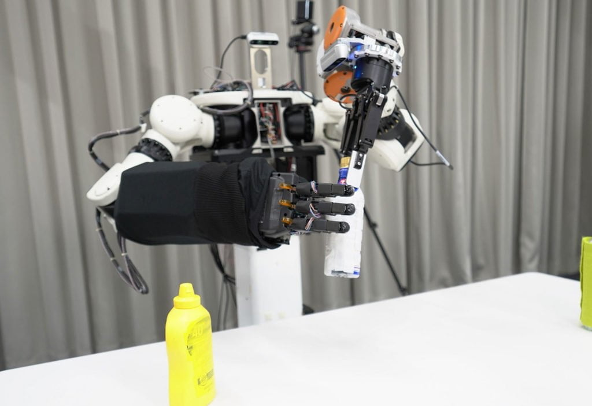
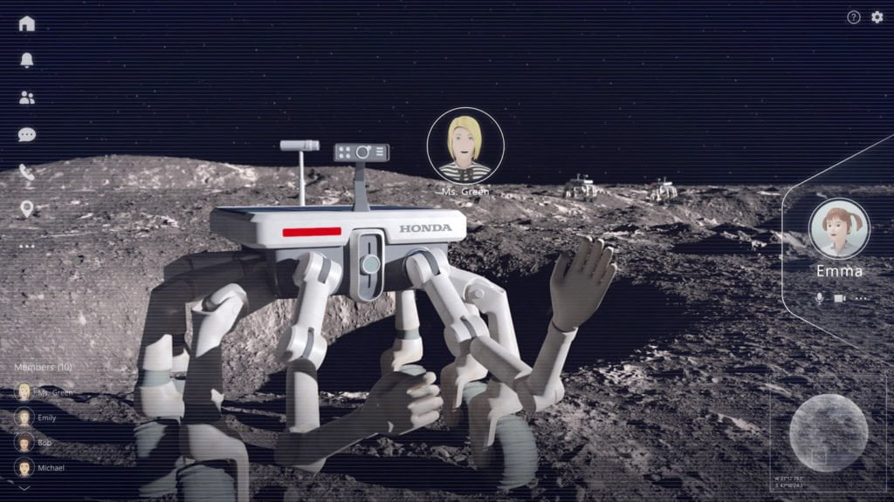

ယခုလက်ရှိ ဟွန်ဒါက ငွေကြေးအမြောက်အများ အကုန်ခံပြီး သုတေသန လုပ်ငန်းတွေကို တိုးချဲ့ဆောင်ရွက်နေတဲ့ ကဏ္ဍတွေထဲမှာ ဒေါင်လိုက် တက်ဆင်းနိုင်တဲ့ eVTOL (electric vertical take-off and landing) လျှပ်စစ်စွမ်းအင်သုံး မြို့တွင်းသွား မိုးပျံယာဉ်တွေ၊ လူ့ကိုယ်စားပြု avatar robot စက်ရုပ်တွေနဲ့ အာကာသ စူးစမ်းလေ့လာရေး နည်းပညာတွေ ပါဝင်ပါတယ်။
ဟွန်ဒါကုမ္ပဏီက ဒီအနာဂတ် နည်းပညာ ကဏ္ဍ သုတေသန လုပ်ငန်းတွေမှာ တွေမှာ လာမယ့် ၆ နှစ်အတွင်း စုစုပေါင်း အမေရိကန် ဒေါ်လာ ၄၅ ဘီလီယံ (သန်း ၄၅,၀၀၀) အထိ ရင်းနှီးမြှုပ်နှံသွားမယ်လို့ ဆိုပါတယ်။ ဒီငွေပမာဏဟာ research and development သုတေသန အတွက် သုံးစွဲမယ့် ငွေပမာဏ သက်သက်ဖြစ်ပါတယ်။
ဟွန်ဒါ ကုမ္ပဏီရဲ့ အဆိုအရ ဒီ အနာဂါတ်နည်းပညာ နယ်ပယ်တွေဟာ ဟွန်ဒါရဲ့ လက်ရှိ လုပ်ဆောင်နေတဲ့ ပင်မ စီးပွားရေး ကဏ္ဍ ဖွံဖြိုးဖို့ သဘာဝကျတဲ့ ခြေလှမ်းတွေ ဖြစ်တယ်လို့ ဆိုပါတယ်။
Hybrid eVTOL ထောင်လိုက်တက်ဆင်း မိုးပျံကား
ဟွန်ဒါရဲ့ အမြင်အရ အနာဂါတ်မှာ လူသားတွေဟာ ဒေါင်လိုက်တက်ဆင်းနိုင်တဲ့ မိုးပျံယာဉ်တွေ အသုံးပြုပြီး ကောင်းကင်မှာ နေ့တဓူဝ ပျံသန်းသွားလာ နေကြလိမ့်မယ်လို့ ဆိုပါတယ်။ ဒီလို တနေ့ရောက်လာတဲ့ အခါ ဟွန်ဒါရဲ့ ယုံကြည်မှုအတိုင်း လူတိုင်း မိုးပျံယာဉ်တွေ လက်လှမ်းမှီစေဖို့ မျှော်လင့်ထားပါတယ်။ဒီ အနာဂါတ် လျှပ်စစ် မိုးပျံယာဉ် တွေထုတ်လုပ်ဖို့ ဟွန်ဒါအနေနဲ့ သူ့ရဲ့ လက်ရှိ နည်းပညာတွေကို ပိုပြီး ကျယ်ကျယ်ပြန့်ပြန့် တိုးချဲ့ အဆင့်မြှင့်ဖို့ လိုအပ်ပါတယ်။ လက်ရှိ ဟွန်ဒါရဲ့ လျှပ်စစ်ကားတွေမှာ အသုံးပြုတဲ့ နည်းပညာဟာ ဒီအနာဂါတ် မိုးပျံယာဉ်တွေအတွက် အခြေခံ အုတ်မြစ်တွေ ဖြစ်လာမှာပါ။ နောက်ပြီး လက်ရှိ ဓါတ်ငွေ့တာဘိုင်သုံး လျှပ်စစ်ထုတ် Hybrid အင်ဂျင်တွေကို ဒီအနာဂါတ် မိုးပျံယာဉ်တွေမှာ တပ်ဆင် အသုံးပြုခြင်းအားဖြင့် ဒီမိုးပျံယာဉ်တွေရဲ့ ပျံသန်းနိုင်တဲ့ အကွာအဝေးကို တိုးချဲ့နိုင်မယ်လို့ ဆိုပါတယ်။
နောက်ပြီး ဒီ eVTOL တွေရဲ့ စိတ်ချရမှု အဆင့်အတန်းကလဲ ခရီးသည်တင် လေယာဉ်ကြီးတွေရဲ့ စိတ်ချရမှု အဆင့်အတန်းကို မှီလာမယ်လို့ ဆိုပါတယ်။ ဒီလိုဖြစ်ဖို့ဆို ဒီ မိုးပျံယာဉ်တွေမှာ ရှင်းလင်တဲ့ တည်ဆောက်ပုံရှိဖို့ လိုအပ်ပြီး အင်ဂျင်တွေကလဲ တစ်လုံးချင်းစီကို သီးသန့် ထိန်းချုပ်မောင်းနှင်နိုင်တဲ့ စနစ်ဖြစ်ဖို့ လိုပါတယ်။ နောက်ပြီး ဒီမိုးပျံယာဉ်တွေရဲ့ ပန်ကာအရွယ်အစား သေးငယ်မှုကလဲ ပိုပြီး အန္တရာယ် နည်းပါးစေပါတယ်။
ဒီလို အချက်တွေကြောင့် ဒီမိုးပျံယာဉ်တွေဟာ ကျဉ်းမြောင်းတဲ့ မြို့တွင်းတွေမှာ စိတ်ချလက်ချ ဘေးအန္တရာယ် ကင်းရှင်းစွာနဲ့ အတက်အဆင်း ပြုလုပ်နိုင်ကြမှာ ဖြစ်ပါတယ်။ နောက်ပြီး လျှပ်စစ်အင်ဂျင် တပ်ဆင်ထားတာရယ်၊ ပန်ကာတွေရဲ့ အရွယ် သေးငယ်တာတွေရယ်ကြောင့် အများသူငါ အနှောက်အယှက် ဖြစ်စေမယ့် အသံဆူညံမှုလဲ နည်းသွားမှာ ဖြစ်ပါတယ်။
ဟွန်ဒါရဲ့ အမြင်အရ အနာဂါတ်မှာ ဟွန်ဒါကုမ္ပဏီ အနေနဲ့ မိုးပျံယာဉ်တွေကို သူ့ရဲ့ အဓိက ခရီးသည် ပို့ဆောင်ရေး ယာဉ်အဖြစ် ရည်မှန်းထားပါတယ်။ ဒီ မိုးပျံယာဉ်ကို မြေပြင်ပေါ်က ဟွန်ဒါကုမ္ပဏီထုတ် မော်တော်ကား၊ မော်တော်ဆိုင်ကယ်နဲ့ မောင်းသူမဲ့ ယာဉ်တွေနဲ့ ချိတ်ဆက်ဖို့ ရည်ရွယ်ထားပါတယ်။
Avatar လူကိုယ်စားပြု စက်ရုပ်
အနာဂါတ် စက်ရုပ် နည်းပညာမှာလဲ လူကိုယ်စား စက်ရုပ်တွေဟာ အရေးပါတဲ့ အခန်းက ပါဝင်လာကြမယ်လို့ ဟွန်ဒါက မျှော်လင့်ထားပါတယ်။ ဒီ လူကိုယ်စား avater စက်ရုပ်တွေမှာဆို စက်ရုပ်ရဲ့ မျက်နှာ နေရာမှာ ကွန်ပြူတာ ဖန်သားပြင် (screen) နဲ့ အစားထိုးတပ်ဆင်ထားမှာ ဖြစ်ပါတယ်။ ဒီနည်းအားဖြင့် အဝေးရောက် တွေ့ဆုံဆွေးနွေးပွဲတွေမှာ ဒီစက်ရုပ်တွေဟာ သူ့ပိုင်ရှင်ကို ကိုယ်စားပြုနိုင်မှာ ဖြစ်ပါတယ်။
ဒီ ဟွန်ဒါ လူကိုယ်စားပြု စက်ရုပ်တွေမှာ ဟွန်ဒါကုမ္ပဏီရဲ့ အဆင့်မြင့် နည်းပညာဖြစ်တဲ့ “လက်တု” တပ်ဆင်ထားမယ်လို့ ဆိုပါတယ်။ ဒီလက်တုမှာဆို လူသားတွေရဲ့ လက်လိုပဲ လက်စစ်လေးတွေ ပါဝင်ပါတယ်။ ဒီနည်းပညာနဲ့ အဝေးကို လူကိုယ်တိုင် သွားစရာ မလိုပဲ စက်ရုပ်ကတဆင့် အဏုစိတ် လှုပ်ရှားမှုတွေကို ပြုလုပ်နိုင်မှာ ဖြစ်ပါတယ်။
ဒီလူကိုယ်စားပြု စက်ရုပ်တွေရဲ့ လုပ်ငန်းလုပ်ဆောင်မှု အဆင်ပြေချောမွေ့အောင် ဉာဏ်ရည်တု (Artificial Intelligence, AI) စနစ်ကိုလဲ တပ်ဆင်သွားမယ်လို့ ဆိုပါတယ်။
ဒီ Honda Avatar Robot တွေကို ၂၀၃၀ ခုနှစ်ကျော်မှာ စတင်ပြီး ဈေးကွက်တင် နိုင်လိမ့်မယ်လို့ ဟွန်ဒါက မျှော်လင့်ထားပါတယ်။ ဒီနည်းပညာ သရုပ်ပြမှုကိုတော့ ၂၀၂၄ ခုနှစ် မတ်လမတိုင်မီ ထုတ်ဖေါ်ပြသနိုင်ဖို့ ရည်မှန်းထားပါတယ်။
အာကာသ စူးစမ်းသွားလာရေး
ဟွန်ဒါကုမ္ပဏီရဲ့ နောက်ထပ် သုတေသန ပြုလုပ်နေတဲ့ အနာဂါတ် နည်းပညာ နယ်ပယ်တခုကတော့ အာကာသ စူးစမ်းလေ့လာမှု ကဏ္ဍပဲ ဖြစ်ပါတယ်။လက်ရှိမှာ ဟွန်ဒါဟာ ပြန်လည်အသုံးပြုနိုင်တဲ့ ဒုံးပျံ အသေးစားလေးတစ်ခုကို သုတေသန ပြုလုပ်နေပါတယ်။ ဒီအတွက် ဟွန်ဒါကုမ္ပဏီက လက်ရှိ ပိုင်ဆိုင်ထားတဲ့ နည်းပညာတွေကို အသုံးပြုပြီး တီထွင်ဖန်တီးသွားမယ်လို့ ဆိုပါတယ်။
ဒီ ပြန်လည်အသုံးပြုနိုင်မယ့် ဒုံးပျံငယ်လေးတွေကို အသုံးပြုပြီး ဂြိုလ်တုတွေကို ကမ္ဘာပတ် လမ်းကြောင်းအနိမ့်ထဲကို လွှတ်တင်ပေးနိုင်ဖို့ ရည်မှန်းထားတာပါ။
ဒါ့အပြင် ဟွန်ဒါအနေနဲ့ ဂျပန်အာကာသ စူစမ်းလေ့လာရေး အေဂျင်စီ (Japan Aerospace Exploration Agency) နဲ့ ပူးတွဲပြီး လပေါ်မှာ စွမ်းအင်ထုတ်ပေးနိုင်မယ့် နည်းပညာကိုလဲ ရှာဖွေစူးစမ်း နေပါတယ်။ ဒီ စွမ်းအင်ထုတ် နည်းပညာမှာ Fuel Cell နည်းပညာနဲ့ ရေဖိအား အသုံးချပြီး လျှပ်စစ်ဓါတ်ခွဲတဲ့ high differential pressure water electrolysis technologies နည်းပညာတွေကို အသုံးချနိုင်ဖို့ ကြိုးစားနေတာပါ။

ဒါ့အပြင် ဟွန်ဒါရဲ့အခြားနည်းပညာတွေ ကို အသုံးချပြီး လပေါ်မှာ အလုပ်လုပ်မယ့် စက်ရုပ်တွေကိုလဲ သုတေသန ပြုလုပ်သွားမယ်လို့ သိရပါတယ်။
Reference: Honda introduces initiatives in an eVTOL, avatar robot and space tech | Inceptive Mind